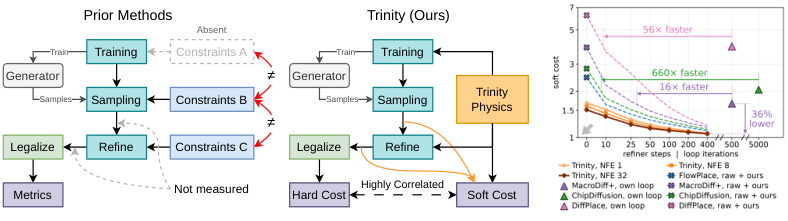
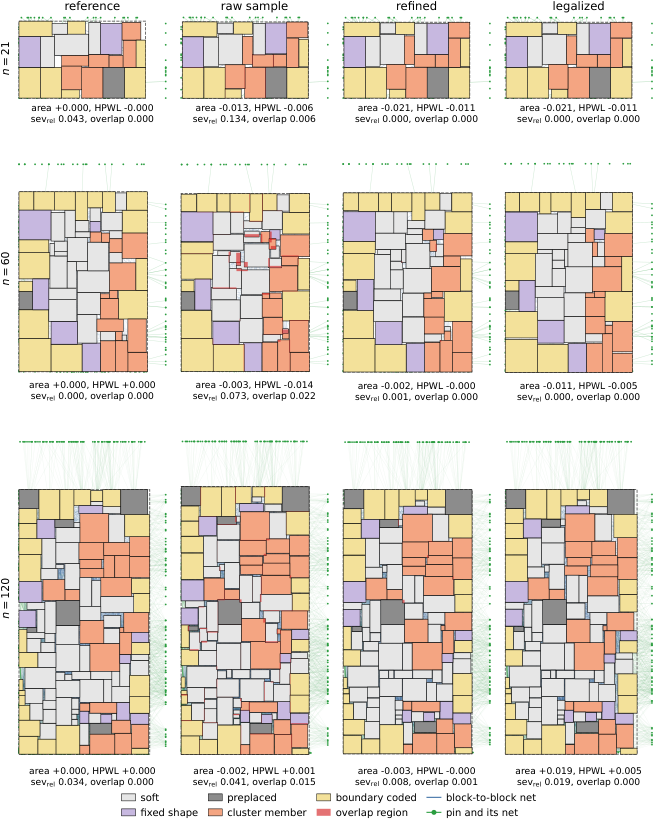

The numbered theoretical results of an appendix are checked in Lean 4 against Mathlib, with some standard analytic steps assumed as hypotheses; code is in the supplementary material.
Abstract
Floorplanning arranges the blocks of a chip and decides their shapes under objectives that press blocks together, short wirelength and a small outline, and constraints that hold them apart, non-overlap, clusters, MIB shapes and boundary blocks. Recent diffusion placers train on reference layouts alone and leave this coupled system to guidance, post-hoc loops and a legalizer, reporting only the endpoint, which hides what the generator contributes. We re-implement four of them under one recipe on FloorSet, score raw, refined and legalized layouts on one scale, and propose Trinity, a flow-matching floorplanner whose six differentiable functions for the constraints and objectives are its training loss term, the energy of a closed-form refiner after sampling and the base of a soft cost for every stage. The network thus learns the correction prior placers apply in their samplers, and sampling needs no guidance. Stage by stage, the training term lowers a plain transformer's raw soft cost by 26% and matters most at short budgets, the shared refiner decides more of the final cost than the generator and matches a ported placer's loop in 16 to 660 times fewer steps, Trinity's refined soft cost is 36% below the best ported pipeline, the soft cost ranks settings as the contest's hard cost does, and on the FloorSet val set the pipeline reaches a mean hard cost of 1.014 in 1.63 s per case.
Problem
Diffusion-based chip floorplanners train only on reference layouts. They leave the coupled constraints and objectives to guidance, post-hoc loops and legalization, and report only endpoint quality, which hides what the generator itself contributes.
Approach
Four prior diffusion placers are re-implemented under one recipe on FloorSet, and raw, refined and legalized layouts are scored on one shared scale. Trinity is a flow-matching transformer floorplanner. Its six differentiable constraint and objective functions serve three roles: a training loss term, the energy of a closed-form refiner after sampling, and the basis of a soft cost used at every stage. Supporting theoretical results in an appendix are machine-checked in Lean 4 with Mathlib.

Figure 1: The network beside each pipeline is the generator that training updates and sampling evaluates. Left: In prior diffusion placers the constraints are absent from training (dashed), differ in form between stages ( \neq ), and the layouts in between are not measured. Middle: Trinity carries one set of constraint and objective functions, its differentiable physics, through training, refineme
Results
The training term lowers raw soft cost by 26%, and the shared refiner matches ported placers' loops in 16 to 660 times fewer steps. Trinity's refined soft cost is 36% below the best ported pipeline, and the soft cost ranks settings consistently with the contest hard cost. On the FloorSet val set Trinity reaches a mean hard cost of 1.014 at 1.63 s per case.

Figure 60: Three FloorSet val set cases with 21, 60 and 120 blocks through the pipeline, 48 draws at \mathrm{NFE}{=}8 with 400 refiner steps and the shared legalizer, the draw with the cheapest legalized layout shown at every stage: the reference layout, the raw sample, the refined layout and the legalized layout. Blocks are coloured by constraint kind, every pairwise overlap region is red, block-
NFE
Steps
N
Mean cost
sec
32
400
48
1.015
1.86
8
400
48
1.014
1.63
8
400
16
1.019
1.14
4
100
16
1.043
0.63
1
50
16
1.115
0.48
FloorSet val set: hard cost and runtime by sampling budget